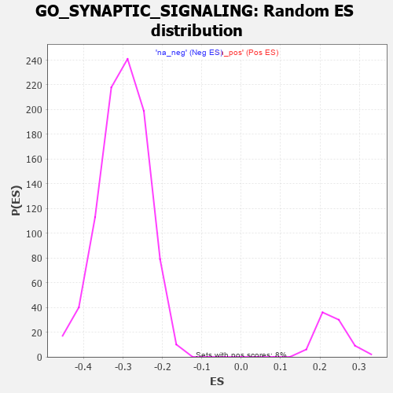

| | | Dataset | 7d |
| Phenotype | NoPhenotypeAvailable |
| Upregulated in class | na_neg |
| GeneSet | GO_SYNAPTIC_SIGNALING |
| Enrichment Score (ES) | -0.50484675 |
| Normalized Enrichment Score (NES) | -1.6867654 |
| Nominal p-value | 0.0 |
| FDR q-value | 0.043615486 |
| FWER p-Value | 0.963 |
Table: GSEA Results Summary
 Fig 1: Enrichment plot: GO_SYNAPTIC_SIGNALING
Fig 1: Enrichment plot: GO_SYNAPTIC_SIGNALING
Profile of the Running ES Score & Positions of GeneSet Members on the Rank Ordered List
| PROBE | GENE SYMBOL | GENE_TITLE | RANK IN GENE LIST | RANK METRIC SCORE | RUNNING ES | CORE ENRICHMENT | | 1 | SYT2 | | | 8 | 5.577 | 0.0607 | No |
| 2 | ADCY8 | | | 124 | 1.418 | 0.0618 | No |
| 3 | GSK3A | | | 351 | 0.745 | 0.0412 | No |
| 4 | DYTN | | | 471 | 0.648 | 0.0332 | No |
| 5 | CDC20 | | | 480 | 0.644 | 0.0393 | No |
| 6 | SRF | | | 542 | 0.615 | 0.0383 | No |
| 7 | KCND2 | | | 617 | 0.590 | 0.0354 | No |
| 8 | AKT1 | | | 1040 | 0.476 | -0.0131 | No |
| 9 | MEF2C | | | 1054 | 0.473 | -0.0096 | No |
| 10 | SRC | | | 1128 | 0.459 | -0.0138 | No |
| 11 | P2RY1 | | | 1416 | 0.407 | -0.0459 | No |
| 12 | CNTN4 | | | 1571 | 0.379 | -0.0613 | No |
| 13 | BACE1 | | | 1673 | 0.360 | -0.0702 | No |
| 14 | GRM8 | | | 1791 | 0.339 | -0.0814 | No |
| 15 | ABR | | | 1812 | 0.335 | -0.0802 | No |
| 16 | FMR1 | | | 1816 | 0.334 | -0.0769 | No |
| 17 | GLRA2 | | | 1892 | 0.321 | -0.0829 | No |
| 18 | GRIK3 | | | 2224 | 0.272 | -0.1221 | No |
| 19 | CREB1 | | | 2243 | 0.269 | -0.1214 | No |
| 20 | BTBD9 | | | 2407 | 0.245 | -0.1395 | No |
| 21 | NR2E1 | | | 2844 | 0.177 | -0.1932 | No |
| 22 | SYT8 | | | 3115 | 0.135 | -0.2261 | No |
| 23 | MTMR2 | | | 3126 | 0.133 | -0.2259 | No |
| 24 | KCNN1 | | | 3196 | 0.123 | -0.2334 | No |
| 25 | RAB8A | | | 3319 | 0.102 | -0.2478 | No |
| 26 | CDK5 | | | 3480 | 0.080 | -0.2673 | No |
| 27 | RGS8 | | | 3490 | 0.079 | -0.2676 | No |
| 28 | RIC3 | | | 3629 | 0.055 | -0.2846 | No |
| 29 | NF1 | | | 3713 | 0.040 | -0.2947 | No |
| 30 | AMPH | | | 3715 | 0.040 | -0.2944 | No |
| 31 | SYT11 | | | 3732 | 0.036 | -0.2960 | No |
| 32 | HTR1B | | | 3745 | 0.035 | -0.2972 | No |
| 33 | DGKZ | | | 3879 | 0.015 | -0.3140 | No |
| 34 | NRG3 | | | 3925 | 0.005 | -0.3197 | No |
| 35 | GLRA1 | | | 3957 | 0.001 | -0.3236 | No |
| 36 | TOR1A | | | 4030 | -0.013 | -0.3327 | No |
| 37 | MTOR | | | 4114 | -0.025 | -0.3430 | No |
| 38 | ABL1 | | | 4125 | -0.027 | -0.3440 | No |
| 39 | SYT12 | | | 4172 | -0.037 | -0.3494 | No |
| 40 | SYNJ1 | | | 4173 | -0.038 | -0.3490 | No |
| 41 | EXOC4 | | | 4182 | -0.039 | -0.3496 | No |
| 42 | SYT17 | | | 4310 | -0.061 | -0.3651 | No |
| 43 | ADRB2 | | | 4352 | -0.068 | -0.3696 | No |
| 44 | LIN7B | | | 4370 | -0.071 | -0.3710 | No |
| 45 | LRRK2 | | | 4467 | -0.087 | -0.3822 | No |
| 46 | JPH3 | | | 4481 | -0.091 | -0.3829 | No |
| 47 | NPTN | | | 4519 | -0.098 | -0.3865 | No |
| 48 | NTRK2 | | | 4543 | -0.104 | -0.3883 | No |
| 49 | STX2 | | | 4562 | -0.108 | -0.3894 | No |
| 50 | NISCH | | | 4568 | -0.109 | -0.3888 | No |
| 51 | SYT4 | | | 4590 | -0.116 | -0.3902 | No |
| 52 | PNKD | | | 4591 | -0.116 | -0.3889 | No |
| 53 | RAP1B | | | 4706 | -0.140 | -0.4019 | No |
| 54 | PXK | | | 4726 | -0.144 | -0.4028 | No |
| 55 | PLCG1 | | | 4770 | -0.151 | -0.4066 | No |
| 56 | MYO5A | | | 4787 | -0.155 | -0.4069 | No |
| 57 | PCLO | | | 4793 | -0.156 | -0.4058 | No |
| 58 | PLCL2 | | | 4807 | -0.159 | -0.4057 | No |
| 59 | P2RX4 | | | 4813 | -0.161 | -0.4046 | No |
| 60 | DLG1 | | | 4860 | -0.169 | -0.4085 | No |
| 61 | DRD2 | | | 5088 | -0.221 | -0.4350 | No |
| 62 | DOC2B | | | 5113 | -0.229 | -0.4356 | No |
| 63 | KCMF1 | | | 5160 | -0.239 | -0.4388 | No |
| 64 | NOVA1 | | | 5197 | -0.247 | -0.4406 | No |
| 65 | SSH1 | | | 5254 | -0.258 | -0.4449 | No |
| 66 | PTEN | | | 5262 | -0.261 | -0.4429 | No |
| 67 | PICK1 | | | 5265 | -0.263 | -0.4403 | No |
| 68 | RIMS2 | | | 5272 | -0.265 | -0.4381 | No |
| 69 | EPHA4 | | | 5273 | -0.265 | -0.4352 | No |
| 70 | CELF4 | | | 5275 | -0.266 | -0.4324 | No |
| 71 | NPY2R | | | 5331 | -0.281 | -0.4363 | No |
| 72 | ITPR3 | | | 5361 | -0.288 | -0.4368 | No |
| 73 | MPP2 | | | 5367 | -0.288 | -0.4342 | No |
| 74 | GRIN1 | | | 5381 | -0.291 | -0.4327 | No |
| 75 | DLG4 | | | 5388 | -0.293 | -0.4302 | No |
| 76 | KCNC4 | | | 5414 | -0.298 | -0.4301 | No |
| 77 | TRIM9 | | | 5526 | -0.327 | -0.4406 | No |
| 78 | DTNB | | | 5571 | -0.338 | -0.4425 | No |
| 79 | ROR2 | | | 5626 | -0.353 | -0.4454 | No |
| 80 | LRRC4 | | | 5692 | -0.371 | -0.4496 | No |
| 81 | DGKI | | | 5725 | -0.384 | -0.4495 | No |
| 82 | GLRB | | | 5776 | -0.398 | -0.4514 | No |
| 83 | SYT9 | | | 5992 | -0.469 | -0.4736 | No |
| 84 | PPT1 | | | 6038 | -0.485 | -0.4740 | No |
| 85 | DLG2 | | | 6126 | -0.513 | -0.4794 | No |
| 86 | GRID2 | | | 6170 | -0.528 | -0.4791 | No |
| 87 | FLOT1 | | | 6276 | -0.564 | -0.4862 | No |
| 88 | PTPRD | | | 6423 | -0.629 | -0.4979 | Yes |
| 89 | GLRA3 | | | 6469 | -0.648 | -0.4964 | Yes |
| 90 | VAMP2 | | | 6525 | -0.672 | -0.4960 | Yes |
| 91 | P2RX5 | | | 6576 | -0.699 | -0.4946 | Yes |
| 92 | CLN3 | | | 6580 | -0.699 | -0.4873 | Yes |
| 93 | ARF1 | | | 6583 | -0.701 | -0.4798 | Yes |
| 94 | PTPRS | | | 6646 | -0.738 | -0.4795 | Yes |
| 95 | RAB5A | | | 6655 | -0.741 | -0.4723 | Yes |
| 96 | VPS18 | | | 6659 | -0.743 | -0.4645 | Yes |
| 97 | CPLX1 | | | 6684 | -0.753 | -0.4592 | Yes |
| 98 | EGFR | | | 6708 | -0.765 | -0.4536 | Yes |
| 99 | GSK3B | | | 6719 | -0.768 | -0.4464 | Yes |
| 100 | GIPC1 | | | 6819 | -0.826 | -0.4499 | Yes |
| 101 | LRP8 | | | 6931 | -0.889 | -0.4542 | Yes |
| 102 | GHSR | | | 6937 | -0.894 | -0.4449 | Yes |
| 103 | DNM1L | | | 6963 | -0.913 | -0.4380 | Yes |
| 104 | CCR2 | | | 7003 | -0.939 | -0.4326 | Yes |
| 105 | GRM5 | | | 7053 | -0.969 | -0.4281 | Yes |
| 106 | PLCB4 | | | 7069 | -0.977 | -0.4192 | Yes |
| 107 | SYT1 | | | 7148 | -1.033 | -0.4177 | Yes |
| 108 | OTOF | | | 7198 | -1.069 | -0.4121 | Yes |
| 109 | CEP89 | | | 7354 | -1.223 | -0.4184 | Yes |
| 110 | GRM1 | | | 7404 | -1.272 | -0.4105 | Yes |
| 111 | KMO | | | 7432 | -1.308 | -0.3995 | Yes |
| 112 | KCNB1 | | | 7444 | -1.327 | -0.3862 | Yes |
| 113 | NPY | | | 7465 | -1.356 | -0.3737 | Yes |
| 114 | VDAC1 | | | 7512 | -1.409 | -0.3640 | Yes |
| 115 | GRIK1 | | | 7538 | -1.454 | -0.3511 | Yes |
| 116 | LAMA2 | | | 7549 | -1.468 | -0.3361 | Yes |
| 117 | DCC | | | 7550 | -1.470 | -0.3198 | Yes |
| 118 | GRIK2 | | | 7552 | -1.471 | -0.3037 | Yes |
| 119 | GRM2 | | | 7596 | -1.547 | -0.2920 | Yes |
| 120 | ADCY1 | | | 7695 | -1.752 | -0.2851 | Yes |
| 121 | ASIC1 | | | 7726 | -1.838 | -0.2686 | Yes |
| 122 | GRM3 | | | 7741 | -1.880 | -0.2495 | Yes |
| 123 | GRIK5 | | | 7792 | -2.044 | -0.2333 | Yes |
| 124 | GRIK4 | | | 7832 | -2.234 | -0.2135 | Yes |
| 125 | GRIA1 | | | 7836 | -2.260 | -0.1889 | Yes |
| 126 | GRM4 | | | 7847 | -2.393 | -0.1636 | Yes |
| 127 | GRID1 | | | 7858 | -2.465 | -0.1376 | Yes |
| 128 | CALM3 | | | 7869 | -2.525 | -0.1109 | Yes |
| 129 | FYN | | | 7881 | -2.622 | -0.0833 | Yes |
| 130 | GRIA2 | | | 7885 | -2.684 | -0.0539 | Yes |
| 131 | PLCB1 | | | 7904 | -2.841 | -0.0248 | Yes |
| 132 | ASIC2 | | | 7917 | -2.995 | 0.0069 | Yes |
Table: GSEA details [plain text format]

Fig 2: GO_SYNAPTIC_SIGNALING: Random ES distribution
Gene set null distribution of ES for GO_SYNAPTIC_SIGNALING